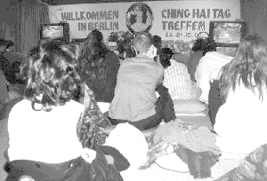
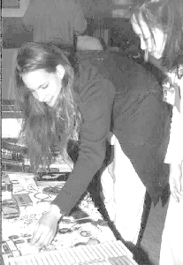
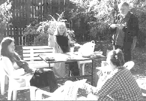

| Panorama d'événements |
|  |
En train de regarder la vidéo de Maître. |
Les 23 et 24 octobre 1999, le centre de Berlin a organisé une retraite pour tous les initiés allemands. Dès que j'ai senti ma détermination à y aller, peu importe ce qu'il pouvait se passer, j'ai ressenti une telle force puissante de bénédictions à travers tout mon être qu'il en a résulté une joie plus grande que de coutume même en allant travailler, de même lors de mon retour à la maison.
|  |
Notre âme intérieure trouve son accomplissement. |
Durant toute la première séance, j'ai ressenti que Maître était physiquement présente et je ne me sentais pas du tout séparée d'Elle. L'expérience de cette retraite était pour moi exactement ce qui avait été promis : "Unité et harmonie" !
|  |
En train de profiter des grillades et du soleil durant la retraite de Berlin. |
Pour célébrer le Jour Ching Hai du 25 octobre, créé officiellement par le Gouvernement des États-Unis en 1993, les disciples allemands de Berlin étaient invités à assister à une retraite de 2 jours. L'endroit charmant était celui d'un ancien jardin d'enfants appartenant à un jeune frère initié, un très joli bâtiment au milieu d'un terrain de jeux et d'un jardin. C'était plaisant de sentir autour de nous une atmosphère enfantine : cela nous donnait facilement l'impression de nous sentir comme des enfants, et plusieurs d'entre nous se sont rappelés leur enfance. Évidement, le temps était chaud et ensoleillé, ce qui est très inhabituel en Allemagne à la fin du mois d'octobre. Un jour avant la retraite, il faisait encore très froid !
L'atmosphère de la retraite était détendue et joyeuse, et nous étions joyeux d'être ensemble, en plus grand nombre comparativement à notre méditation de groupe habituelle. Pour notre bien-être physique, le groupe de cuisine a pris soin de nous en préparant une délicieuse nourriture végétarienne. Des amis qui étaient intéressés par la Méthode Guan Yin ont aussi été invités. C'était intéressant parce que les disciples locaux avaient l'opportunité de rencontrer des frères et soeurs venant d'autres parties de l'Allemagne. Certains nous ont dit qu'ils devaient conduire chaque semaine environ deux heures et demie pour arriver au centre le plus près de chez eux pour assister à la méditation de groupe. C'était aussi beau de voir que de nombreux jeunes frères et soeurs étaient parmi nous. Nous espérons que cette retraite sera le début de nombreuses retraites à Berlin durant le prochain millénaire, et nous remercions tous les frères et soeurs qui ont fait en sorte que cette réunion puisse avoir lieu ! Merci, Maître, parce que à travers Vous nous pouvons nous rencontrer les uns les autres !